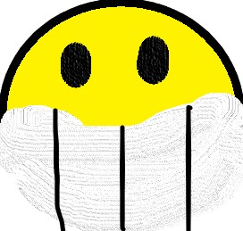

Wikipédia Até a Lua
Seja bem-vindo a Wikipédia do Até a Lua, uma criação feita por mim, guifornai. 
Os cachorros principais são Doug, Dock e Dox, eles são muito ricos, eles tem empregos, eles enfrentam vilões, e mais!
Doug Moneydog
Doug Moneydog é um cachorro caramelo brasileiro. Ele gosta de Videogames, ama morango, gosta de refrigerante de uva e odeia polvos. O Doug é o irmão do meio dos três irmãos. Ele gosta muito da maioria dos empregos que teve e ele adora o espaço. Doug sempre foi um bom cãozinho e respeita muito os outros. Ele e seus irmãos eram os melhores da escola, quer dizer, de quando eles iam na escola. Ele usava um aquário na cabeça antes de usar um capacete. Esse cãozinho é muito legal, e ele queria ir pra lua!Dox Moneydog
Dox Moneydog é um cachorro caramelo também brasileiro. Ele é o mais velho dos irmãos, Ganhou 5 troféus em golfe, 4 em basquete, 6 em futebol, adora moedas gigantes e bebe 2l de água por dia. Ele gosta muito de malhar, tanto que ele é BODYBUILDER. Ele gosta muito de esportes e gosta da maioria dos empregos que já teve. Ele usa uma bermuda azul-claro e fica descalço. É o único cachorro que tem restos de barba. Ele gosta muito de um jogo chamado... EI, não posso falar isso, pois é uma das minhas próximas criações. Dox é chato às vezes, mas também é muito cachorro-boa. Dox já nasceu com pequenos músculos, mas ficou BODYBUILDER quando cresceu, BIR!!!. Assim como seu irmão Doug Moneydog, Dox Moneydog também quer ir para a lua!Dock Moneydog
Dock Moneydog é um cachorro caramelo também, e também é brasileiro. Dock é HACKER (do bem e do mal), ama piadas ruins, é o mais novo dos irmãos e o mais inteligente é ele. Ele é o mais novo dos 3 irmãos. Ele é um cachorro sem braçinhos, você deve se perguntar: "MAS GUIFORNAI, ELE É DEFICIENTE? ELE NÃO TEM BRAÇOS!", Ele não tem braços, mas ele tem mãos. As mãos dele só aparecem quando ele quer. Exemplo: Dock quer beber um gole de vitamina, as mãos dele surgem, por que ele quer pegar o copo para beber o gole, dai ele toma, guarda o copo onde estava e "desativa" as mãos dele. Dock parece um Tripulante do jogo Among Us, da Innersloth. Ele também queria ir pra lua!Agora conheça os vilões dos cachorros!:
Clique AquiSe quiser falar comigo, clique aqui para me mandar um EMAIL!
Send emailSe você gostou do site deixe uma mensagem no meu whatsapp!